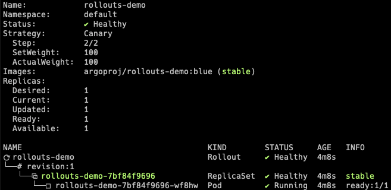
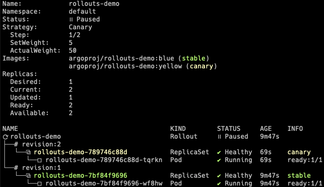
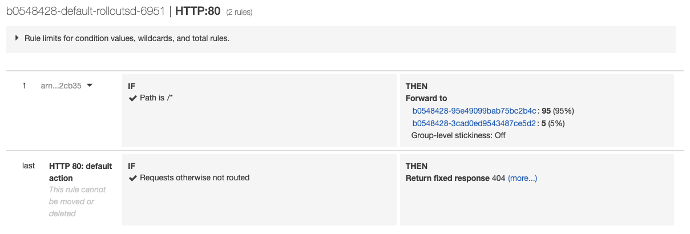

Getting Started - AWS ALB Ingress Controller¶
This guide covers how Argo Rollouts integrates with the AWS Application Load Balancer (ALB) for traffic shaping. This guide builds upon the concepts of the basic getting started guide.
Requirements¶
- Kubernetes cluster with AWS ALB Ingress Controller installed
Tip
See the Setup ALB ingress controller on how to setup a Kubernetes cluster with AWS ALB Ingress Controller
1. Deploy the Rollout, Services, and Ingress¶
When AWS ALB is used as the traffic router, the Rollout canary strategy must define the following mandatory fields:
apiVersion: argoproj.io/v1alpha1
kind: Rollout
metadata:
name: rollouts-demo
spec:
strategy:
canary:
# Reference to a Service which the controller updates to point to the canary ReplicaSet
canaryService: rollouts-demo-canary
# Reference to a Service which the controller updates to point to the stable ReplicaSet
stableService: rollouts-demo-stable
trafficRouting:
alb:
# Reference to an Ingress in the same namespace of the Rollout
ingress: rollouts-demo-ingress
# Reference to a port of the Service
servicePort: 80
...
The Ingress in trafficRouting.alb.ingress is required
to have a custom action which splits between the stable and canary Services, referenced in the rollout.
In this guide, those Services are named: rollouts-demo-stable and rollouts-demo-canary
respectively. The weight values for these services used should be initially set to 100% stable,
and 0% on the canary. During an update, these values will be modified by the controller.
apiVersion: networking.k8s.io/v1beta1
kind: Ingress
metadata:
name: rollouts-demo-ingress
annotations:
kubernetes.io/ingress.class: alb
alb.ingress.kubernetes.io/scheme: internet-facing
alb.ingress.kubernetes.io/actions.rollouts-demo-stable: |
{
"Type":"forward",
"ForwardConfig":{
"TargetGroups":[
{
"Weight":0,
"ServiceName":"rollouts-demo-canary",
"ServicePort":"80"
},
{
"Weight":100,
"ServiceName":"rollouts-demo-stable",
"ServicePort":"80"
}
]
}
}
spec:
rules:
- http:
paths:
- path: /*
backend:
serviceName: rollouts-demo-stable
servicePort: use-annotation
Run the following commands to deploy:
- A Rollout
- Two Services (stable and canary)
- An Ingress
kubectl apply -f https://raw.githubusercontent.com/argoproj/argo-rollouts/master/docs/getting-started/alb/rollout.yaml
kubectl apply -f https://raw.githubusercontent.com/argoproj/argo-rollouts/master/docs/getting-started/alb/services.yaml
kubectl apply -f https://raw.githubusercontent.com/argoproj/argo-rollouts/master/docs/getting-started/alb/ingress.yaml
After applying the manifests you should see the following rollout, services, and ingress resources in the cluster:
$ kubectl get ro
NAME DESIRED CURRENT UP-TO-DATE AVAILABLE
rollouts-demo 1 1 1 1
$ kubectl get svc
NAME TYPE CLUSTER-IP EXTERNAL-IP PORT(S) AGE
rollouts-demo-canary NodePort 10.100.16.64 <none> 80:30224/TCP 2m43s
rollouts-demo-stable NodePort 10.100.146.232 <none> 80:31135/TCP 2m43s
$ kubectl get ingress
NAME HOSTS ADDRESS PORTS AGE
rollouts-demo-ingress * b0548428-default-rolloutsd-6951-1972570952.ap-northeast-1.elb.amazonaws.com 80 6m36s
kubectl argo rollouts get rollout rollouts-demo

2. Perform an update¶
Update the rollout by changing the image, and wait for it to reach the paused state.
kubectl argo rollouts set image rollouts-demo rollouts-demo=argoproj/rollouts-demo:yellow
kubectl argo rollouts get rollout rollouts-demo

At this point, both the canary and stable version of the Rollout are running, with 5% of the traffic directed to the canary. To understand how this works, inspect the listener rules for the ALB. When looking at the listener rules, we see that the forward action weights have been modified by the controller to reflect the current weight of the canary.

The controller has added rollouts-pod-template-hash selector to the Services and
attached the same label to the Pods. Therefore, you can split the traffic by simply
forwarding the requests to the Services according to the weights.
As the Rollout progresses through steps, the forward action weights will be adjusted to match the current setWeight of the steps.